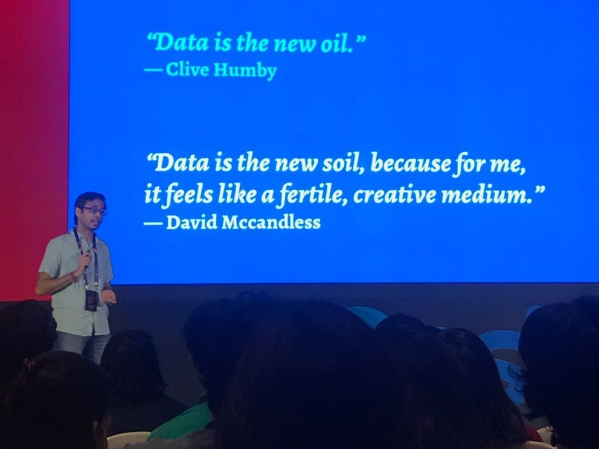
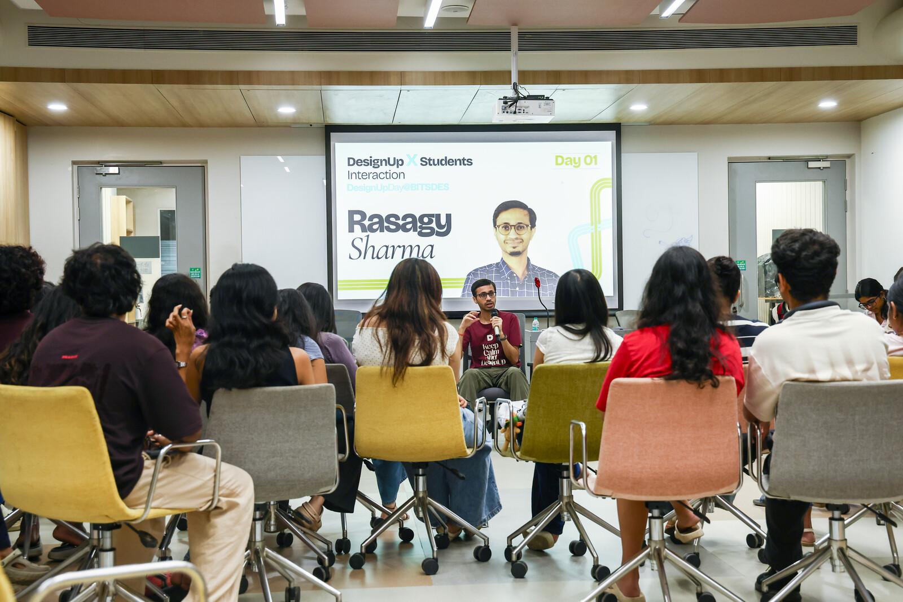
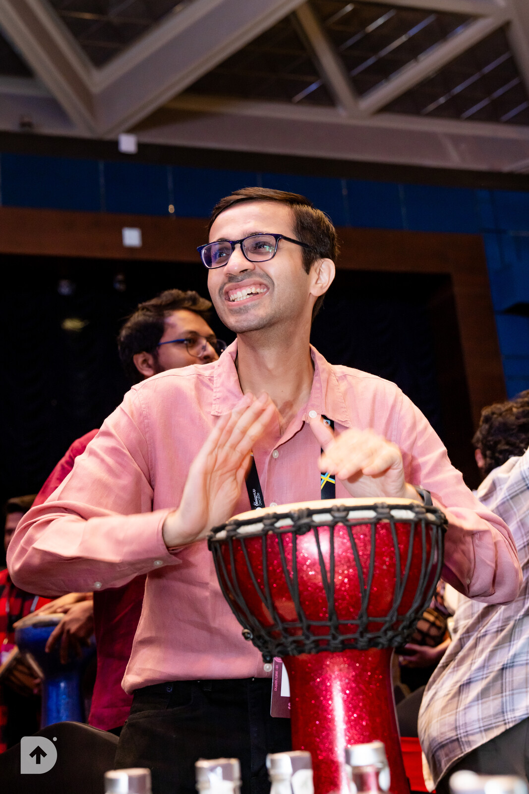
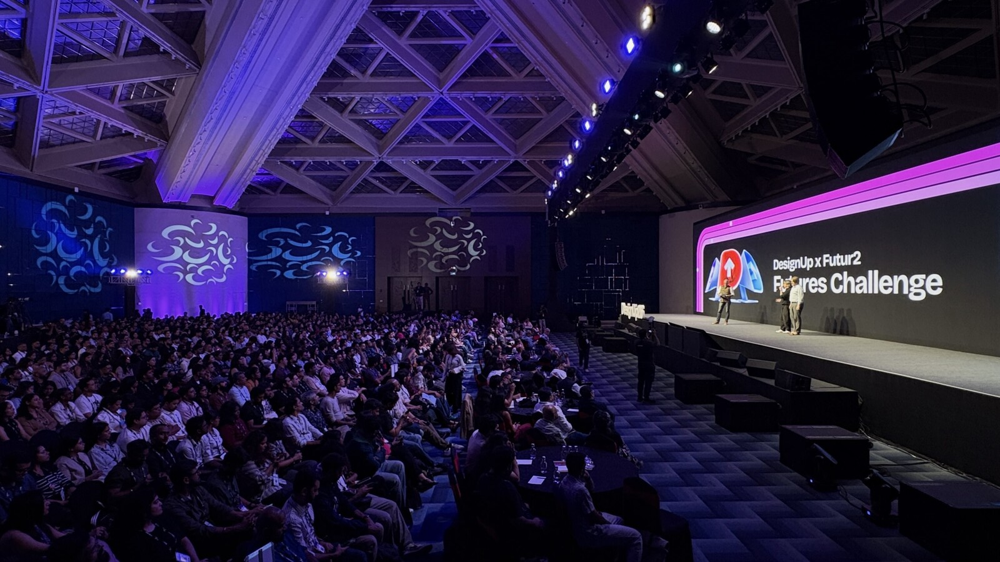
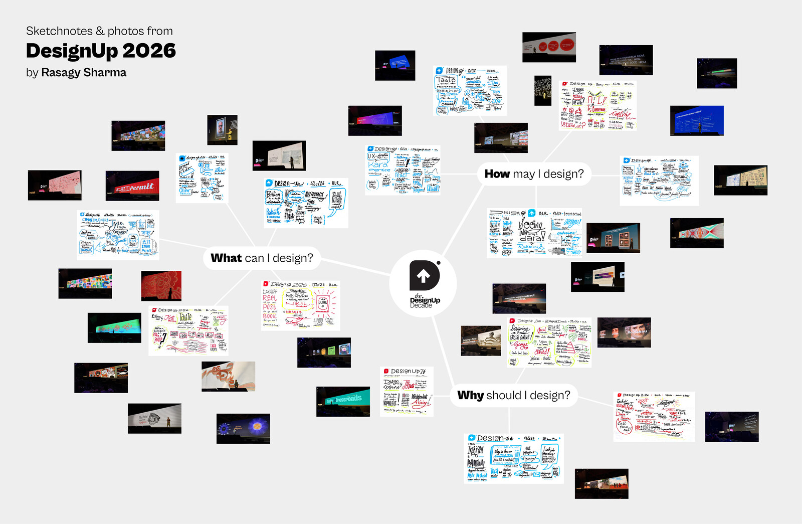
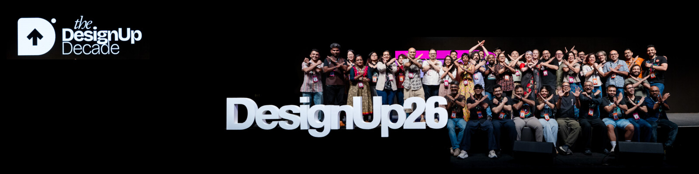

Back in 2017, I stood on the DesignUp stage for the first time, stitching my scattered projects into a coherent narrative around designing with data. Little did I know that this would become my key narrative for over a decade to come, and this conference would become a ritual I look forward to every year.

After my talk, I asked Jay if I could volunteer for the conference. I had helped organize a bunch of other conferences, meetups & communities before this, and I could clearly feel that DesignUp was different, but it took me years to articulate it.
Over the last 9 years that I’ve attended DesignUp Conference, I’ve spoken twice, conducted a bunch of workshops, hosted a few panels and experimented with new formats & initiatives (like collaborating with sketchnoters & hosting DesignUpDay at BITS Design).

This edition was no different: I hosted Beatrix, Oliver, and George at BITS Design School, Mumbai (and reminisced my days at BITS Goa), conducted a workshop on being a designer in the age of AI with Kenneth, judged the DesignUp Futures Challenge, and helped a few amazing speakers shine at the DesignUp stage.
Like every past edition: I sat through nearly every talk, and sketchnoted as much as I can. The only difference this year: I actually attended the whole drum jam for the first time (and finally understood why everyone shows up early for it!)

What makes DesignUp so special to me? Recently, I’ve been soaking in Parable of the Sower by Octavia Butler whenever I travel recently, and she writes:
All that you touch, you change. All that you change, changes you. God is Change, the only constant.
So much has changed in the last decade for me: jobs, tools, titles, personal life, identity… DesignUp has been one of the only constant, and it has transformed who I have become.

While every edition has its own highlights, takeaways & themes, the consistent feeling that DesignUp evokes is that of “Collective effervescence” — a term that past-speaker Taapsi mentioned over breakfast in the 2024 edition. The shared feeling of energy & emotional resonance is unmatched.

I left another edition of DesignUp, with a notebook filled with sketchnotes, arms warm with lingering hugs, a heart filled with hope, and my self, reminded that I belong.
Thank you Jay, Shiva, Esha & the wonderful DesignUp crew* for the best times! Can’t wait to start planning the next edition.

*Thanks Jay Demetillo for teaching us the distinction between a team & a crew. DesignUp would be impossible without folks like Tanisha, Abhishu, Baisampayan, Anil, Aghosh, Ripul, Soo & many more wonderful volunteers!